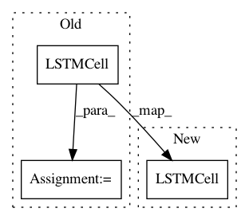

71bd73748b835de5ae20bdc90ce4321e47f4c2b2,python/eight_mile/tf/layers.py,,lstm_cell,#Any#Any#,193
Before Change
num_proj = kwargs.get("projsz")
if num_proj and num_proj == hsz:
num_proj = None
cell = tf.contrib.rnn.LSTMCell(hsz, forget_bias=forget_bias, state_is_tuple=True, num_proj=num_proj)
skip_conn = bool(kwargs.get("skip_conn", False))
return tf.nn.rnn_cell.ResidualWrapper(cell) if skip_conn else cell
After Change
:param forget_bias: (``int``) Defaults to 1
:return: a cell
return tf.contrib.rnn.LSTMCell(hsz, forget_bias=forget_bias, state_is_tuple=True)
def lstm_cell_w_dropout(hsz, pdrop, forget_bias=1.0, variational=False, training=False):
Produce a single cell with dropout
In pattern: SUPERPATTERN
Frequency: 3
Non-data size: 3
Instances
Project Name: dpressel/mead-baseline
Commit Name: 71bd73748b835de5ae20bdc90ce4321e47f4c2b2
Time: 2019-09-25
Author: dpressel@gmail.com
File Name: python/eight_mile/tf/layers.py
Class Name:
Method Name: lstm_cell
Project Name: OpenNMT/OpenNMT-py
Commit Name: ec457e6f1ce33afc5c6a8c7ab8efc3bddf7058d9
Time: 2017-03-14
Author: bryan.mccann.is@gmail.com
File Name: onmt/Models.py
Class Name: StackedLSTM
Method Name: __init__
Project Name: pytorch/examples
Commit Name: cae6d715b7b0182fee52bfc3db2c695c8058bc96
Time: 2017-03-14
Author: bryan.mccann.is@gmail.com
File Name: OpenNMT/onmt/Models.py
Class Name: StackedLSTM
Method Name: __init__